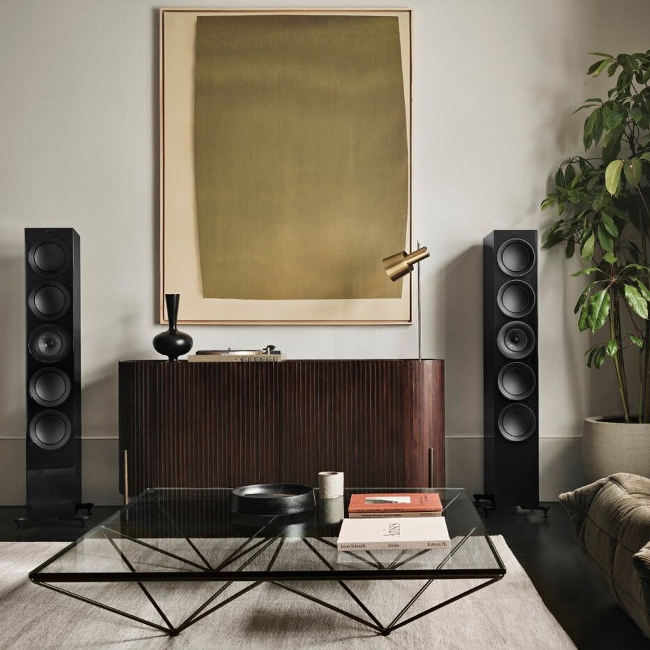

Sumqayıt Məhkəmə Kompleksi kimi dövlət obyektlərində texniki həllərin rolu yalnız funksionallıqla məhdudlaşmır. Burada davamlılıq, uyğunluq, koordinasiya və obyektin iş rejiminə mane olmadan işləyən sistem yanaşması əsas prioritetdir.

Layihənin yanaşmasında əsas məqsəd obyektin gündəlik fəaliyyətinə uyğun, etibarlı və koordinasiyalı sistem axını yaratmaq idi. Burada mühəndis həllərinin uyğunluğu, təhlükəsizliklə bağlı tələblər və idarə olunan texniki struktur bir-biri ilə balanslı şəkildə quruldu.

Hazırda bu layihə üçün ayrıca lokal video faylı yoxdur. Amma bu hissə gələcəkdə layihə videosu, dron çəkilişi və ya təqdimat media faylı üçün nəzərdə tutulub.


Məhkəmə kompleksi kimi rəsmi və yüksək intizam tələb edən mühitlərdə sistemlərin stabil və ardıcıl işləməsi əsasdır. Bu layihədə təqdim olunan həllər həm texniki davamlılıq, həm də obyektin istifadə məntiqi baxımından uyğunlaşdırıldı.
Nəticə olaraq obyektin gündəlik fəaliyyətinə uyğun mühəndis həlləri formalaşdırıldı və sistemlərin bir-biri ilə işləmə məntiqi gücləndirildi. Bu da kompleks üçün daha peşəkar və daha dayanıqlı texniki baza yaratdı.
İnfrastruktur, koordinasiya və sistem inteqrasiyası bir araya gətirilərək obyekt üçün daha etibarlı və daha uyğunlaşdırılmış texniki həll paketi təqdim olundu.